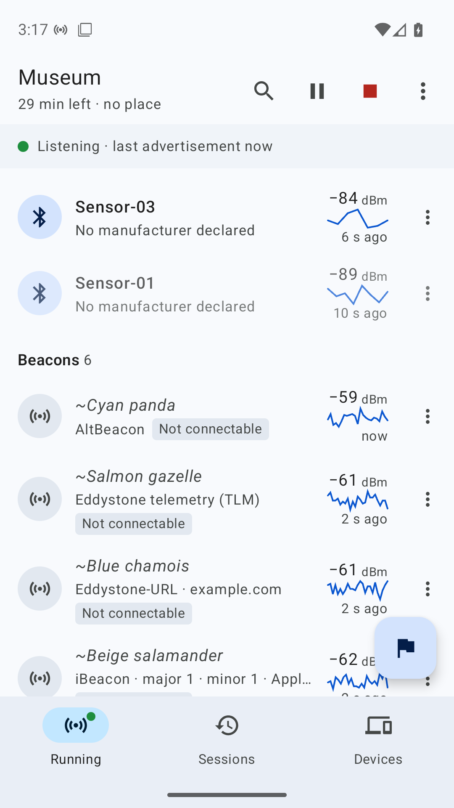
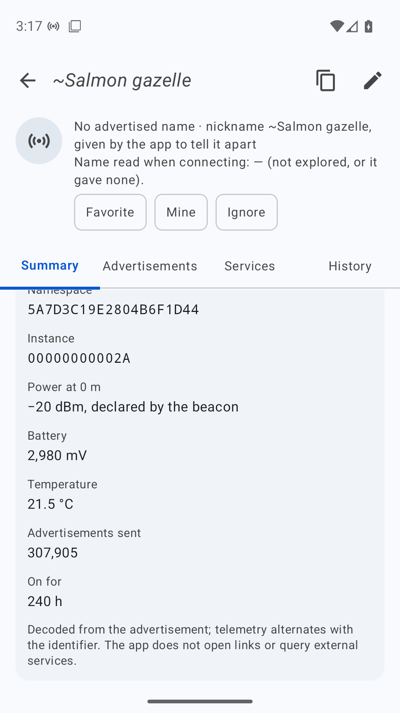

How to scan iBeacon and Eddystone beacons with an Android phone: IDs and battery
You have installed beacons in a shop, a museum or an office, or you just received a test one, and you want to check that it is advertising, with which identifiers, and how much battery it has left. You don't need the manufacturer's app or a connection. Beacons broadcast their identifiers over Bluetooth LE, and your phone can hear them. Only some broadcast their battery: those that send Eddystone telemetry (TLM).
The three formats you will find
| Format | Defined by | What it broadcasts |
|---|---|---|
| iBeacon | Apple | A UUID, a major and a minor number, and the expected power at 1 m |
| Eddystone | Several frame types: UID (namespace and instance), URL, TLM (telemetry) and EID (an encrypted, changing identifier) | |
| AltBeacon | Open specification | An identifier and the reference power, similar to iBeacon |
Many beacons send more than one, for example iBeacon and Eddystone-TLM in turns.
Step by step with BLE Observer
- Start a session near the beacons. The free version lasts up to 30 minutes.
- In the List view, scroll to the Beacons section, apart from named devices.
- Tap one to see its content, decoded from the advertisement:
- iBeacon: UUID, major, minor and power at 1 m. If it is the Apple sample UUID the app knows (74278BDA-…), the List says so: it is common in generic beacons.
- Eddystone-UID: namespace and instance.
- Eddystone-URL: the address it broadcasts. The app shows it but never opens it.
- Eddystone-TLM: battery in millivolts, temperature, how many advertisements it has sent and how long it has been on.
- Read the interval with care. The typical interval is the average time between the advertisements the phone heard. Android does not listen all the time and misses some, so it is usually longer than the configured one: it does not measure it.
- Walk with the live map to tell several beacons apart: the one in front of you is usually the strongest.


Auditing every beacon in a building
For a large installation, record a session while you walk the building and add a mark in each room. Then, with Pro, export to Excel or CSV and turn pseudonyms off: they are on by default and replace the identifiers with codes like BEACON-001. The Beacons sheet has one row per beacon with:
- the format and its identifiers (UUID, major and minor, or namespace and instance);
- battery, temperature, advertisement count and time on, if it sends telemetry;
- the declared power and the median received signal.
The Devices sheet says at which marks each address was heard, and when exporting you can also pick a single mark.
Compare it with your own list to see which beacons were not heard, which have low battery, and which still carry a factory UUID. Not hearing one does not prove it is off.
What it doesn't do
- It doesn't configure beacons. The app only listens: it never writes to a device. To change the UUID, interval or power, use the manufacturer's app.
- It doesn't open Eddystone URLs or contact any external service.
- It doesn't decrypt Eddystone-EID. That identifier is meant to be resolved only by its owner.
- Metres are a rough guide. The signal tells near, middle or far, not an exact position.
BLE Observer is free on Google Play (Android 13 or later; in the EU, the US, the UK, Canada and Australia), with a one-time Pro for long sessions and exports.